Spring Security主要功能
具体信息可以参考官方文档
- 身份认证（authentication）：身份认证是验证
谁正在访问系统资源，判断用户是否为合法用户。认证用户的常见方式是要求用户输入用户名和密码。 - 授权（authorization）：用户进行身份认证后，系统会控制
谁能访问哪些资源，这个过程叫做授权。用户无法访问没有权限的资源。 - 防御常见攻击（protection against common attacks）
- CSRF
- HTTP Headers
- HTTP Requests
快速开始：身份认证
创建spring boot 项目：
JDK：17
SpringBoot：3.2.0（依赖了Spring Security 6.2.0）
在Idea中没有3.2.0这个版本
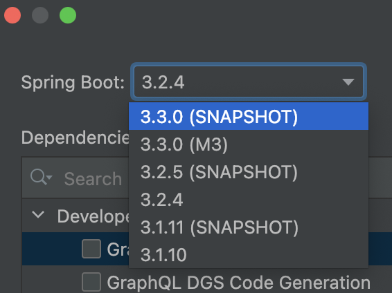可以直接在pom文件里面修改
<parent> <groupId>org.springframework.boot</groupId> <artifactId>spring-boot-starter-parent</artifactId> <version>3.2.0</version> <relativePath/> <!-- lookup parent from repository --> </parent>
Dependencies：Spring Web、Spring Security、Thymeleaf
【Notice】
如果使用Spring 的国内脚手架(
https://start.aliyun.com/)，能够使用的最高版本是spring boot 3.0.2为此需要使用Spring的官方脚手架（
https://start.spring.io/）【error】
Unresolved plugin: 'org.springframework.boot:spring-boot-maven-plugin:3.2.4'加入对应的版本即可：
<build> <plugins> <plugin> <groupId>org.springframework.boot</groupId> <artifactId>spring-boot-maven-plugin</artifactId> <version>3.2.4</version> </plugin> </plugins> </build>
创建IndexController：
@Controller
public class IndexController {
@GetMapping("/")
public String index() {
return "index";
}
}
创建index.html
<html xmlns:th="https://www.thymeleaf.org">
<head>
<title>Hello Security!</title>
</head>
<body>
<h1>Hello Security</h1>
<!--通过使用@{/logout}，Thymeleaf将自动处理生成正确的URL，以适应当前的上下文路径。
这样，无论应用程序部署在哪个上下文路径下，生成的URL都能正确地指向注销功能。-->
<a th:href="@{/logout}">Log Out1</a>
<a href="/logout">Log Out2</a>
</body>
</html>
启动项目测试Controller
浏览器中访问http://localhost:8080/,浏览器自动跳转到登录页面http://localhost:8080/login
输入用户名：user
输入密码：在控制台的启动日志中查找初始的默认密码
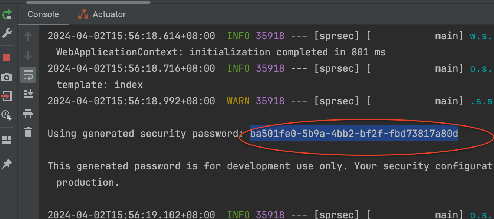@{/logout}的作用
通过使用@{/logout}，Thymeleaf将自动处理生成正确的URL，以适应当前的上下文路径。这样，无论应用程序部署在哪个上下文路径下，生成的URL都能正确地指向注销功能。
例如：如果我们在配置文件中添加如下内容
server.servlet.context-path=/demo
那么Log Out1的路径为：http://localhost:8080/demo/logout
那么Log Out2的路径为：http://localhost:8080/logout
页面样式无法加载的问题
页面样式bootstrap.min.css是一个CDN地址，需要通过科学上网的方式访问。否则你的登录页会加载很久。
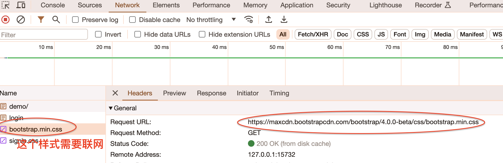并且看到的页面是这样的（登录按钮没有样式文件渲染，但是不影响登录功能的执行）

Spring Security默认做了什么
- 保护应用程序URL，要求对应用程序的任何交互进行身份验证。
- 程序启动时生成一个默认用户“user”。
- 生成一个默认的随机密码，并将此密码记录在控制台上。
- 生成默认的登录表单和注销页面。
- 提供基于表单的登录和注销流程。
- 对于Web请求，重定向到登录页面；
- 对于服务请求，返回401未经授权。
- 处理跨站请求伪造（CSRF）攻击。
- 处理会话劫持攻击。
- 写入Strict-Transport-Security以确保HTTPS。
- 写入X-Content-Type-Options以处理嗅探攻击。
- 写入Cache Control头来保护经过身份验证的资源。
- 写入X-Frame-Options以处理点击劫持攻击。
Spring Security 的底层原理
官方文档：Spring Security的底层原理
Spring Security之所以默认帮助我们做了那么多事情，它的底层原理是传统的Servlet过滤器

程序的启动和运行
DefaultSecurityFilterChain
SecurityFilterChain接口的实现（DefaultSecurityFilterChain），加载了默认的16个Filter
public DefaultSecurityFilterChain(RequestMatcher requestMatcher, List<Filter> filters) {
if (filters.isEmpty()) {
logger.info(LogMessage.format("Will not secure %s", requestMatcher));
} else {
logger.info(LogMessage.format("Will secure %s with %s", requestMatcher, filters));
}
this.requestMatcher = requestMatcher;
this.filters = new ArrayList(filters);// 这一步
}
SecurityProperties
默认情况下Spring Security将初始的用户名和密码存在了SecurityProperties类中。这个类中有一个静态内部类User，配置了默认的用户名（name = “user”）和密码（password = uuid）

我们也可以将用户名、密码配置在SpringBoot的配置文件中：在application.properties中配置自定义用户名和密码
spring.security.user.name=user
spring.security.user.password=123
Spring Security自定义配置
基于内存的用户认证
官方文档：Java自定义配置
创建自定义配置
package com.linkit.sprsec.config;
@Configuration // 配置类
// Spring项目总需要添加此注解，SpringBoot项目中不需要
@EnableWebSecurity//目的：开启spring security 的自定义配置
public class WebSecurityConfig {
@Bean
public UserDetailsService userDetailsService() {
// 创建一个内存中的用户管理器，并添加一个用户
InMemoryUserDetailsManager manager = new InMemoryUserDetailsManager();
// 使用manager对象来管理user对象
manager.createUser( //此行设置断点可以查看创建的user对象
// 创建UserDetails对象，用于管理用户名，密码，角色，权限等信息
User
.withDefaultPasswordEncoder()
.username("123") //自定义用户名
.password("123") //自定义密码
.roles("USER") //自定义角色
.build()
);
return manager;
}
}
@EnableWebSecurity注解在Spring boot项目中是已经配置了的。因为引入了spring-boot-starter-security依赖
package org.springframework.boot.autoconfigure.security.servlet;
class SpringBootWebSecurityConfiguration {
SpringBootWebSecurityConfiguration() {
}
@ConditionalOnClass({EnableWebSecurity.class})// 表示只要EnableWebSecurity.class加载进进来，就会开启下面注解
@EnableWebSecurity // 这里已经开启了Spring security
static class WebSecurityEnablerConfiguration {
WebSecurityEnablerConfiguration() {
}
}
另外，在application.properties配置的name和password就会失效
基于内存的用户认证流程
程序启动时：
创建InMemoryUserDetailsManager对象（在
WebSecurityConfig里面）
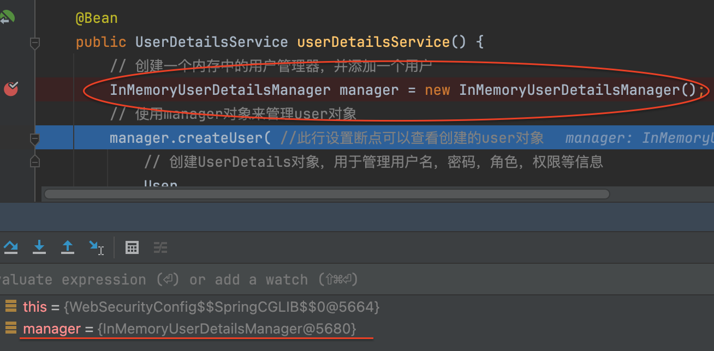public class InMemoryUserDetailsManager implements UserDetailsManager, UserDetailsPasswordService创建
User对象，封装用户名密码使用InMemoryUserDetailsManager
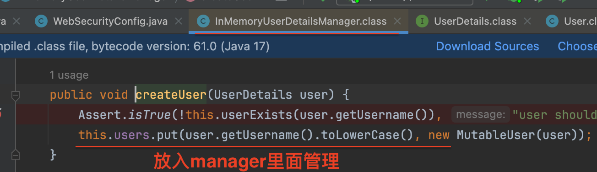将User存入内存users是一个map对象
private final Map<String, MutableUserDetails> users = new HashMap();
校验用户时：
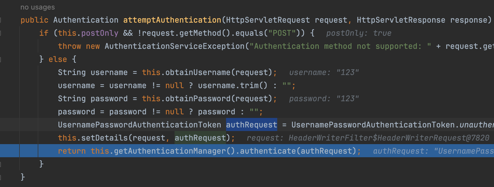UsernamePasswordAuthenticationFilter用于接收请求参数（用户和密码）
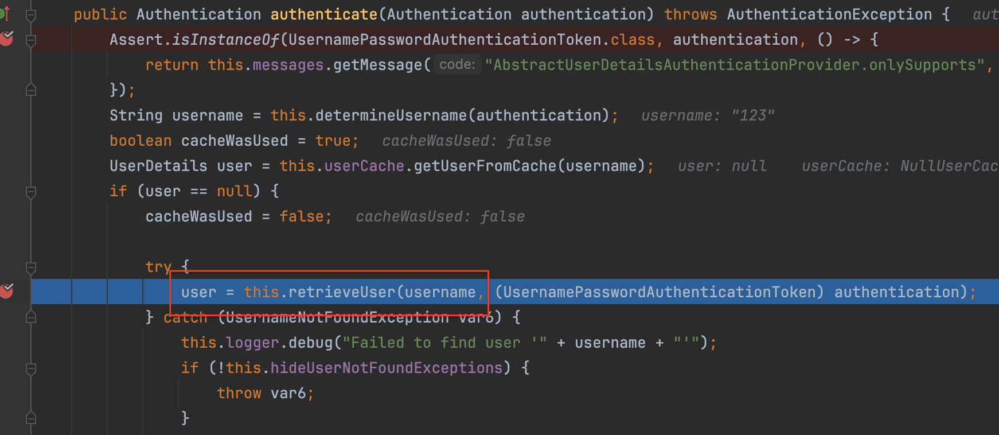AbstractUserDetailsAuthenticationProvider用于进一步校验进入到
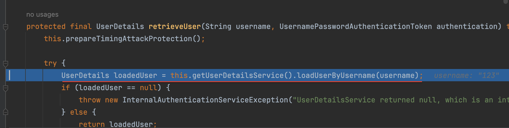DaoAuthenticationProvider里面，SpringSecurity自动使用InMemoryUserDetailsManager的loadUserByUsername方法从
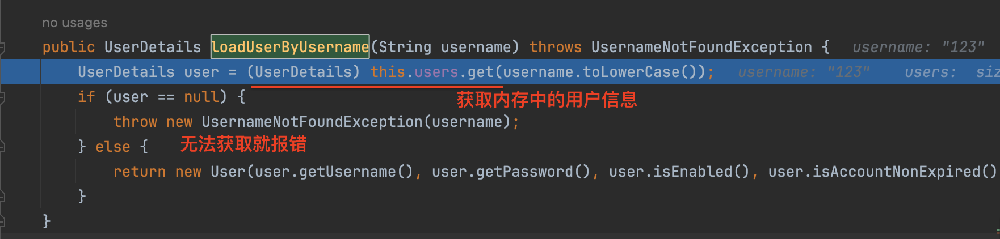内存中获取User对象如果可以从内存中获取对应用户名的用户，说明这个用户存在，接下来就只要校验密码了。所有
return new User回到
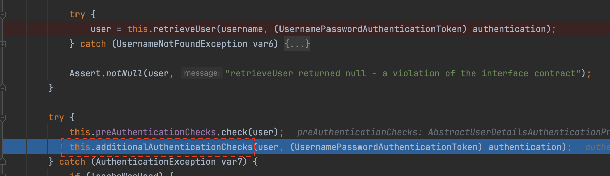AbstractUserDetailsAuthenticationProvider，调用additionalAuthenticationChecks方法在
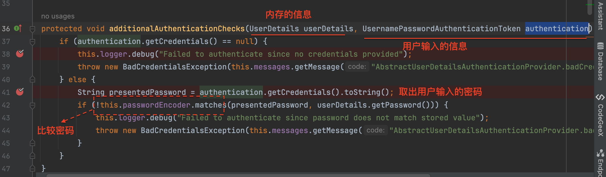additionalAuthenticationChecks方法里面校验密码
基于数据库的用户认证
配置mysql数据库
Sql：创建表并插入测试数据
引入依赖：
- mysql-connector-java；mybatis-plus-boot-starter；org.mybatis；lombok
配置数据源
实体类-Mapper-Service-Controller-Mapper.xml
基于数据库的用户认证流程
- 程序启动时：
- 创建
DBUserDetailsManager类，实现接口 UserDetailsManager, UserDetailsPasswordService - 在应用程序中初始化这个类的对象
- 创建
- 校验用户时：
- SpringSecurity自动使用
DBUserDetailsManager的loadUserByUsername方法从数据库中获取User对象 - 在
UsernamePasswordAuthenticationFilter过滤器中的attemptAuthentication方法中将用户输入的用户名密码和从数据库中获取到的用户信息进行比较，进行用户认证
- SpringSecurity自动使用
定义DBUserDetailsManager
public class DBUserDetailsManager implements UserDetailsManager, UserDetailsPasswordService {
@Resource
private UserMapper userMapper;
/**
*
* @param username 前端传过来的username
* @return
* @throws UsernameNotFoundException
*/
@Override
public UserDetails loadUserByUsername(String username) throws UsernameNotFoundException {
QueryWrapper<User> queryWrapper = new QueryWrapper<>();
queryWrapper.eq("username", username);
User user = userMapper.selectOne(queryWrapper);
if (user == null) {
//用户不存在
throw new UsernameNotFoundException(username);
} else {
// 这里返回一个 UserDetails，然后框架会自动调用方法去校验密码
Collection<GrantedAuthority> authorities = new ArrayList<>();
return new org.springframework.security.core.userdetails.User(
user.getUsername(),
user.getPassword(),
user.getEnabled(),
true, //用户账号是否过期
true, //用户凭证是否过期
true, //用户是否未被锁定
authorities); //权限列表
}
}
}
初始化UserDetailsService
修改WebSecurityConfig中的userDetailsService方法如下
@Bean
public UserDetailsService userDetailsService() {
DBUserDetailsManager manager = new DBUserDetailsManager();
return manager;
}
或者直接在DBUserDetailsManager类上添加@Component注解
@Component
public class DBUserDetailsManager implements UserDetailsManager, UserDetailsPasswordService
【Notice】
要注释掉之前在WebSecurityConfig中写的userDetailsService方法
@Configuration // 配置类 // Spring项目总需要添加此注解，SpringBoot项目中不需要 //@EnableWebSecurity//目的：开启spring security 的自定义配置 public class WebSecurityConfig { // @Bean // public UserDetailsService userDetailsService() { // // 创建一个内存中的用户管理器，并添加一个用户 // InMemoryUserDetailsManager manager = new InMemoryUserDetailsManager(); // // 使用manager对象来管理user对象 // manager.createUser( //此行设置断点可以查看创建的user对象 // // 创建UserDetails对象，用于管理用户名，密码，角色，权限等信息 // User // .withDefaultPasswordEncoder() // .username("123") //自定义用户名 // .password("123") //自定义密码 // .roles("USER") //自定义角色 // .build() // ); // return manager; // } }
SpringSecurity的默认配置
在SpringSecurity中，默认会有如下过滤链。
@Bean
public SecurityFilterChain filterChain(HttpSecurity http) throws Exception {
//authorizeRequests()：开启授权保护
//anyRequest()：对所有请求开启授权保护
//authenticated()：已认证请求会自动被授权
// 上面配置会有如下效果：如果未认证的请求过来，会被跳转的登录页（anyRequest），
// 被认证之后才能访问相关的网页（authenticated）
http
.authorizeRequests(authorize -> authorize.anyRequest().authenticated())
.formLogin(withDefaults())//formLogin 表单授权方式--withDefaults()生成默认的登录或者登出页面
.httpBasic(withDefaults());//基本授权方式（有formLogin存在，这句就不起作用，所有也可以注释掉）
return http.build();
}
所谓基本授权方式就是，使用浏览器的登录弹窗
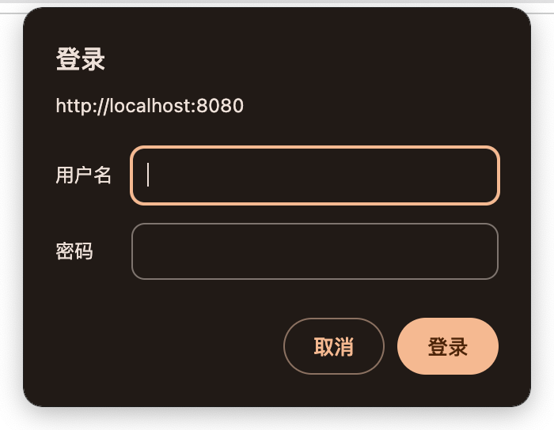添加用户功能
Controller
@PostMapping("/add")
public void add(@RequestBody User user){
userService.saveUserDetails(user);
}
Service
@Service
public class UserServiceImpl extends ServiceImpl<UserMapper, User> implements UserService {
@Resource
private DBUserDetailsManager dbUserDetailsManager;
@Override
public void saveUserDetails(User user) {
UserDetails userDetails = org.springframework.security.core.userdetails.User
.withDefaultPasswordEncoder() // 表示使用默认的密码加密方案
.username(user.getUsername()) //自定义用户名
.password(user.getPassword()) //自定义密码
.build();
dbUserDetailsManager.createUser(userDetails);
}
}
DBUserDetailsManager
@Override
public void createUser(UserDetails userDetails) {
User user = new User();
user.setUsername(userDetails.getUsername());
user.setPassword(userDetails.getPassword());// 这里存进去的就是加密后的密码
user.setEnabled(true);
userMapper.insert(user);
}
使用Swagger测试
pom中添加配置用于测试
<!--swagger测试-->
<dependency>
<groupId>com.github.xiaoymin</groupId>
<artifactId>knife4j-openapi3-jakarta-spring-boot-starter</artifactId>
<version>4.1.0</version>
</dependency>
Swagger测试地址：http://localhost:8080/demo/doc.html
注意：访问Swagger测试地址地址前需要先登录
关闭csrf攻击防御
CSRF (Cross-site request forgery，跨站请求伪造)也被称为One Click Attack或者Session Riding，通常缩写为CSRF或者XSRF，是一种对网站的恶意利用。简单的说，是攻击者通过一些技术手段欺骗用户的浏览器去访问一个自己以前认证过的站点并运行一些操作（如发邮件，发消息，甚至财产操作（如转账和购买商品））。因为浏览器之前认证过，所以被访问的站点会觉得这是真正的用户操作而去运行。
CSRF攻击原理及过程
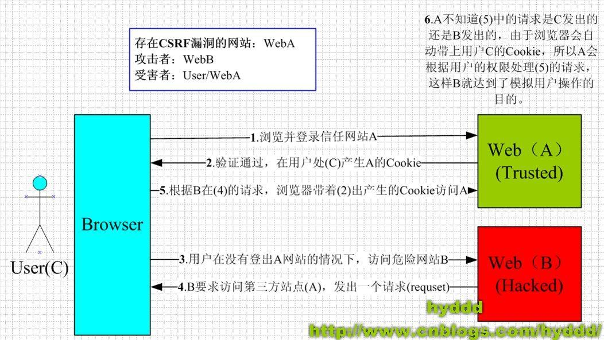SpringSecurity如何防御csrf攻击
默认情况下SpringSecurity开启了csrf攻击防御的功能，这要求任何请求的请求参数中都必须携带一个**_csrf字段。后端回去校验这个_csrf字段。比如登录页面，后端生成的登录页面就随机生成了_csrf**字段的值
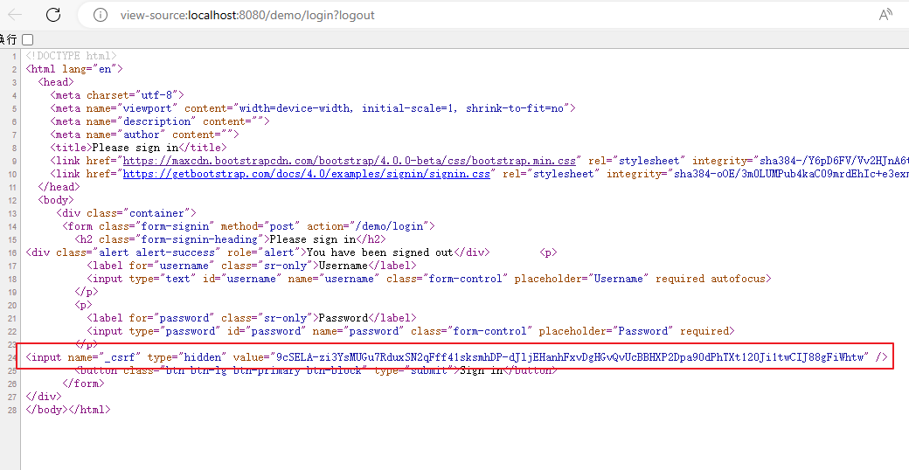如何关闭csrf攻击防御
@Configuration // 配置类
public class WebSecurityConfig {
@Bean
public SecurityFilterChain filterChain(HttpSecurity http) throws Exception {
//authorizeRequests()：开启授权保护
//anyRequest()：对所有请求开启授权保护
//authenticated()：已认证请求会自动被授权
// 上面配置会有如下效果：如果未认证的请求过来，会被跳转的登录页（anyRequest），
// 被认证之后才能访问相关的网页（authenticated）
http.authorizeRequests(authorize -> authorize.anyRequest().authenticated())
.formLogin(withDefaults())//表单授权方式
.httpBasic(withDefaults());//基本授权方式
// 关闭csrf跨域请求
// csrf：跨站请求伪造，默认是开启的，如果关闭了，那么所有的请求都不需要csrf的验证了
http.csrf(csrf -> csrf.disable());
return http.build();
}
}
密码加密算法
密码加密方式
明文密码：
最初，密码以明文形式存储在数据库中。但是恶意用户可能会通过SQL注入等手段获取到明文密码，或者程序员将数据库数据泄露的情况也可能发生。
Hash算法：
Spring Security的PasswordEncoder接口用于对密码进行单向转换，从而将密码安全地存储。对密码单向转换需要用到哈希算法，例如MD5、SHA-256、SHA-512等，哈希算法是单向的，只能加密，不能解密。
因此，数据库中存储的是单向转换后的密码，Spring Security在进行用户身份验证时需要将用户输入的密码进行单向转换，然后与数据库的密码进行比较。
因此，如果发生数据泄露，只有密码的单向哈希会被暴露。由于哈希是单向的，并且在给定哈希的情况下只能通过暴力破解的方式猜测密码。
彩虹表：
恶意用户创建称为彩虹表的查找表。
彩虹表就是一个庞大的、针对各种可能的字母组合预先生成的哈希值集合，有了它可以快速破解各类密码。越是复杂的密码，需要的彩虹表就越大，主流的彩虹表都是100G以上，目前主要的算法有LM, NTLM, MD5, SHA1, MYSQLSHA1, HALFLMCHALL, NTLMCHALL, ORACLE-SYSTEM, MD5-HALF。
加盐密码：
为了减轻彩虹表的效果，开发人员开始使用加盐密码。不再只使用密码作为哈希函数的输入，而是为每个用户的密码生成随机字节（称为盐）。盐和用户的密码将一起经过哈希函数运算，生成一个唯一的哈希。盐将以明文形式与用户的密码一起存储。然后，当用户尝试进行身份验证时，盐和用户输入的密码一起经过哈希函数运算，再与存储的密码进行比较。唯一的盐意味着彩虹表不再有效，因为对于每个盐和密码的组合，哈希都是不同的。
@Test
public void testPs(){
String password= "123";
// 产生盐值(32位) 这里要注意去掉 UUID 生成 -
String salt = UUID.randomUUID().toString().replaceAll("-", "");
System.out.println(salt); // e0d50055abbd42fc899cc85db897e59a
// 生成加盐之后的密码((盐值 + 密码)整体 md5 加密)
String saltPassword = DigestUtils.md5DigestAsHex((salt + password).getBytes());
System.out.println(saltPassword); //829c2637fdb13503b6becec0ddbd0b63
// 生成最终密码(保存到数据库中的密码)[自己约定的格式：32位盐值 +&+ 32位加盐后的密码]
// 这样约定格式是为了解密的时候方便得到盐值
String finalPassword = salt + "$" + saltPassword;
//e0d50055abbd42fc899cc85db897e59a$829c2637fdb13503b6becec0ddbd0b63
System.out.println(finalPassword);
}
自适应单向函数：
随着硬件的不断发展，加盐哈希也不再安全。原因是，计算机可以每秒执行数十亿次哈希计算。这意味着我们可以轻松地破解每个密码。
现在，开发人员开始使用自适应单向函数来存储密码。使用自适应单向函数验证密码时，故意占用资源（故意使用大量的CPU、内存或其他资源）。自适应单向函数允许配置一个“工作因子”，随着硬件的改进而增加。我们建议将“工作因子”调整到系统中验证密码需要约一秒钟的时间。这种权衡是为了让攻击者难以破解密码。
为什么故意占用资源可以使攻击者难以破解密码？
这是因为攻击者通常会使用自动化工具尝试大量的密码组合来破解密码。如果每次验证密码都需要消耗显著的计算资源（如CPU时间和内存），那么攻击者尝试每个密码组合所需的时间就会增加。这样，即使攻击者拥有强大的计算资源，他们也**需要更长的时间来完成破解尝试，从而显著提高了破解成本**。
自适应单向函数包括bcrypt、PBKDF2、scrypt和argon2。
PasswordEncoder
BCryptPasswordEncoder
使用广泛支持的bcrypt算法来对密码进行哈希。为了增加对密码破解的抵抗力，bcrypt故意设计得较慢。和其他自适应单向函数一样，应该调整其参数，使其在您的系统上验证一个密码大约需要1秒的时间。BCryptPasswordEncoder的默认实现使用强度10。建议您在自己的系统上调整和测试强度参数，以便验证密码时大约需要1秒的时间。
@Test
void testPassword() {
// 工作因子，默认值是10，最小值是4，最大值是31，值越大运算速度越慢
/* public BCryptPasswordEncoder(int strength) {
this(strength, (SecureRandom)null);
}*/
PasswordEncoder encoder = new BCryptPasswordEncoder(4);
//明文："password"
//密文：result，即使明文密码相同，每次生成的密文也不一致
long strat1 = System.currentTimeMillis();
// $2a$04$KrqI8F2GnG8yRtsdCE3lWu/rmAzE0EZqYNgEDdQlb8LUGdoAx1rWe
String result = encoder.encode("password");
System.out.println(result);
//密码校验：工作因子越大，matches的时间就越长，因为matches也是生成一个秘密的过程
Assert.isTrue(encoder.matches("password", result), "密码不一致");
long end1 = System.currentTimeMillis();
System.out.println("耗时1：" + (end1 - strat1));// 耗时1：8
PasswordEncoder encoder2 = new BCryptPasswordEncoder(14);
long strat2 = System.currentTimeMillis();
String result2 = encoder2.encode("password2");
// $2a$14$aDxJ8eH5U1uUAkIVZ92CWuVtTJ2GFVQmBPA7QVLJQCJFCGMnDvW42
System.out.println(result2);
//密码校验
Assert.isTrue(encoder2.matches("password2", result2), "密码不一致");
long end2 = System.currentTimeMillis();
System.out.println("耗时2：" + (end2 - strat2));// 耗时2：2004
}
encoder.encode("password")这段代码的细节：BCryptPasswordEncoder
public String encode(CharSequence rawPassword) {
if (rawPassword == null) {
throw new IllegalArgumentException("rawPassword cannot be null");
} else {
String salt = this.getSalt(); // 先获取盐
return BCrypt.hashpw(rawPassword.toString(), salt);// 盐 + 原始密码 = 新的密码
}
}
// version 版本号信息；strength 工作因子；random 随机数
private final SecureRandom random;
private String getSalt() {
return this.random != null
? BCrypt.gensalt(this.version.getVersion(), this.strength, this.random)
: BCrypt.gensalt(this.version.getVersion(), this.strength);
}
Argon2PasswordEncoder
使用Argon2算法对密码进行哈希处理。Argon2是密码哈希比赛的获胜者。为了防止在自定义硬件上进行密码破解，Argon2是一种故意缓慢的算法，需要大量内存。与其他自适应单向函数一样，它应该在您的系统上调整为大约1秒来验证一个密码。当前的Argon2PasswordEncoder实现需要使用BouncyCastle库。
Pbkdf2PasswordEncoder
使用PBKDF2算法对密码进行哈希处理。为了防止密码破解，PBKDF2是一种故意缓慢的算法。与其他自适应单向函数一样，它应该在您的系统上调整为大约1秒来验证一个密码。当需要FIPS认证时，这种算法是一个很好的选择。
SCryptPasswordEncoder
使用scrypt算法对密码进行哈希处理。为了防止在自定义硬件上进行密码破解，scrypt是一种故意缓慢的算法，需要大量内存。与其他自适应单向函数一样，它应该在您的系统上调整为大约1秒来验证一个密码。
DelegatingPasswordEncoder
- 表中存储的密码形式：
{bcrypt}$2a$10$GRLdNijSQMUvl/au9ofL.eDwmoohzzS7.rmNSJZ.0FxO/BTk76klW - 通过如下源码可以知道：可以通过
{bcrypt}前缀动态获取和密码的形式类型一致的PasswordEncoder对象 - 目的：方便随时做密码策略的升级，兼容数据库中的老版本密码策略生成的密码
在前面的Service当中，我们使用了默认的加密放方案
@Override
public void saveUserDetails(User user) {
UserDetails userDetails = org.springframework.security.core.userdetails.User
.withDefaultPasswordEncoder() // 表示使用默认的密码加密方案
.username(user.getUsername()) //自定义用户名
.password(user.getPassword()) //自定义密码
.build();
dbUserDetailsManager.createUser(userDetails);
}
在withDefaultPasswordEncoder()方法总创建了PasswordEncoder对象
@Deprecated
public static UserBuilder withDefaultPasswordEncoder() {
logger.warn("User.withDefaultPasswordEncoder() is considered unsafe for production and is only intended for sample applications.");
PasswordEncoder encoder = PasswordEncoderFactories.createDelegatingPasswordEncoder();
UserBuilder var10000 = builder();
Objects.requireNonNull(encoder);
return var10000.passwordEncoder(encoder::encode);
}
createDelegatingPasswordEncoder()方法对所有的加密算法做了一个处理，将所有加密算法作为一个key存入到encoders里面（一个map对象）
public static PasswordEncoder createDelegatingPasswordEncoder() {
String encodingId = "bcrypt";// 默认的加密算法
Map<String, PasswordEncoder> encoders = new HashMap();
encoders.put(encodingId, new BCryptPasswordEncoder());
encoders.put("ldap", new LdapShaPasswordEncoder());
encoders.put("MD4", new Md4PasswordEncoder());
encoders.put("MD5", new MessageDigestPasswordEncoder("MD5"));
encoders.put("noop", NoOpPasswordEncoder.getInstance());
encoders.put("pbkdf2", Pbkdf2PasswordEncoder.defaultsForSpringSecurity_v5_5());
encoders.put("pbkdf2@SpringSecurity_v5_8", Pbkdf2PasswordEncoder.defaultsForSpringSecurity_v5_8());
encoders.put("scrypt", SCryptPasswordEncoder.defaultsForSpringSecurity_v4_1());
encoders.put("scrypt@SpringSecurity_v5_8", SCryptPasswordEncoder.defaultsForSpringSecurity_v5_8());
encoders.put("SHA-1", new MessageDigestPasswordEncoder("SHA-1"));
encoders.put("SHA-256", new MessageDigestPasswordEncoder("SHA-256"));
encoders.put("sha256", new StandardPasswordEncoder());
encoders.put("argon2", Argon2PasswordEncoder.defaultsForSpringSecurity_v5_2());
encoders.put("argon2@SpringSecurity_v5_8", Argon2PasswordEncoder.defaultsForSpringSecurity_v5_8());
return new DelegatingPasswordEncoder(encodingId, encoders);
}
在DelegatingPasswordEncoder中，有一个matches方法，用于校验密码，他会根据不容的加密方式去校验密码

自定义登录页面
创建登录页面：resources/templates/login.html
<!DOCTYPE html>
<html xmlns:th="https://www.thymeleaf.org">
<head>
<title>登录</title>
</head>
<body>
<h1>登录</h1>
<!--如何 error 参数存在的话，就会显示这个-->
<div th:if="${param.error}">
错误的用户名和密码.</div>
<!--method必须为"post"-->
<!--th:action="@{/login}" ，
使用动态参数，表单中会自动生成_csrf隐藏字段，用于防止csrf攻击
login: 和登录页面保持一致即可，SpringSecurity自动进行登录认证-->
<form th:action="@{/login}" method="post">
<div>
<!--如果没有设置usernameParameter，name必须为"username"-->
<input type="text" name="myusername" placeholder="用户名"/>
</div>
<div>
<!--如果没有设置passwordParameter，name必须为"password"-->
<input type="password" name="mypassword" placeholder="密码"/>
</div>
<input type="submit" value="登录" />
</form>
</body>
</html>
配置SecurityFilterChain：
@Configuration // 配置类
// Spring项目总需要添加此注解，SpringBoot项目中不需要
//@EnableWebSecurity//目的：开启spring security 的自定义配置
public class WebSecurityConfig {
@Bean
public SecurityFilterChain filterChain(HttpSecurity http) throws Exception {
http.authorizeRequests(authorize -> authorize.anyRequest().authenticated())
.formLogin(form->{
form.loginPage("/login") // 表示要定制的登录页面
.permitAll() //登录页面无需授权即可访问。如果没有这个配置，页面会提示重定向次数过多
// 因为当我们访问login页面的时候，会被要求去授权（authorize.anyRequest()）
// 于是又会重定向到 http://localhost:8080/demo/login，陷入死循环
// <input type="text" name="myusername" placeholder="用户名"/> 相对应
.usernameParameter("myusername") //自定义表单用户名参数，默认是username
// <input type="password" name="myusername" placeholder="密码"/> 相对应
.passwordParameter("mypassword") //自定义表单密码参数，默认是password
.failureUrl("/login?error") //登录失败的返回地址，默认值是error
;
}); //表单授权方式
// 关闭csrf跨域请求
// <form th:action="@{/login}" method="post">
// http.csrf(csrf -> csrf.disable());
return http.build();
}
}
要注意的点：
- loginPage登录页
- permitAll
- usernameParameter 和 passwordParameter
- failureUrl
th:action="@{/login}"的作用
logout注销失败的原因
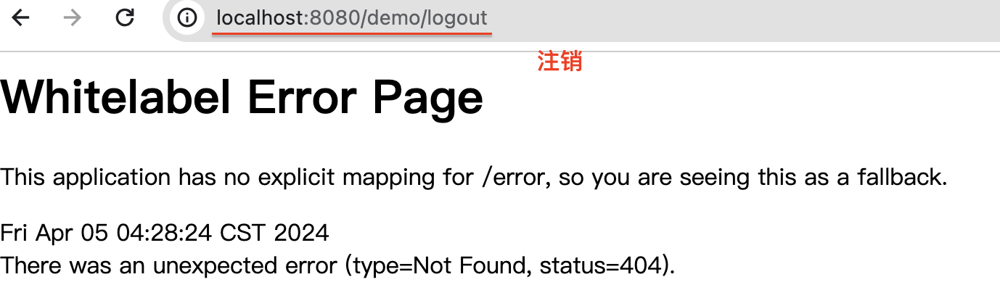是由于受到csrf攻击防御策略的影响，关闭csrf跨域请求就可以解决
前后端分离
用户认证流程

- 登录成功后调用：AuthenticationSuccessHandler
- 登录失败后调用：AuthenticationFailureHandler
认证成功的响应
MyAuthenticationSuccessHandler: 成功结果处理
在前后端分离前，后端可以控制跳转的页面，前后端分离后，后端只能返回数据给前端
public class MyAuthenticationSuccessHandler implements AuthenticationSuccessHandler {
@Override
public void onAuthenticationSuccess(HttpServletRequest request, HttpServletResponse response, Authentication authentication) throws IOException, ServletException {
//获取用户身份信息
Object principal = authentication.getPrincipal();
//获取用户凭证信息(比如密码，token等)
// Object credentials = authentication.getCredentials();
// 获取用户权限信息
// Collection<? extends GrantedAuthority> authorities = authentication.getAuthorities();
//创建结果对象
HashMap result = new HashMap();
result.put("code", 0);
result.put("message", "登录成功");
result.put("data", principal);
//转换成json字符串
String json = JSON.toJSONString(result);
//返回响应（响应头）：设置相应为Json格式，编码为UTF-8
response.setContentType("application/json;charset=UTF-8");
// 返回响应体:
response.getWriter().println(json);
}
}
SecurityFilterChain配置
public class WebSecurityConfig {
@Bean
public SecurityFilterChain filterChain(HttpSecurity http) throws Exception {
http.authorizeRequests(authorize -> authorize.anyRequest().authenticated())
.formLogin(form->{
form.loginPage("/login")
.permitAll()
.usernameParameter("myusername")
.passwordParameter("mypassword")
.failureUrl("/login?error")
.successHandler(new MyAuthenticationSuccessHandler()) // 登录成功后的处理器
;
}); //表单授权方式
return http.build();
}
}
认证失败响应
失败结果处理
public class MyAuthenticationFailureHandler implements AuthenticationFailureHandler {
@Override
public void onAuthenticationFailure(HttpServletRequest request, HttpServletResponse response, AuthenticationException exception) throws IOException, ServletException {
//获取错误信息
String localizedMessage = exception.getLocalizedMessage();
//创建结果对象
HashMap result = new HashMap();
result.put("code", -1);
result.put("message", localizedMessage);
//转换成json字符串
String json = JSON.toJSONString(result);
//返回响应
response.setContentType("application/json;charset=UTF-8");
response.getWriter().println(json);
}
}
SecurityFilterChain配置
@Configuration // 配置类
public class WebSecurityConfig {
@Bean
public SecurityFilterChain filterChain(HttpSecurity http) throws Exception {
http.authorizeRequests(authorize -> authorize.anyRequest().authenticated())
.formLogin(form->{
form.loginPage("/login")
.permitAll()
.usernameParameter("myusername")
.passwordParameter("mypassword")
.failureUrl("/login?error")
.successHandler(new MyAuthenticationSuccessHandler())
.failureHandler(new MyAuthenticationFailureHandler()) //认证失败时的处理
;
}); //表单授权方式
return http.build();
}
}
注销响应
注销结果处理
public class MyLogoutSuccessHandler implements LogoutSuccessHandler {
@Override
public void onLogoutSuccess(HttpServletRequest request, HttpServletResponse response, Authentication authentication) throws IOException, ServletException {
//创建结果对象
HashMap result = new HashMap();
result.put("code", 0);
result.put("message", "注销成功");
//转换成json字符串
String json = JSON.toJSONString(result);
//返回响应
response.setContentType("application/json;charset=UTF-8");
response.getWriter().println(json);
}
}
SecurityFilterChain配置
@Configuration // 配置类
public class WebSecurityConfig {
@Bean
public SecurityFilterChain filterChain(HttpSecurity http) throws Exception {
//认证操作
http.authorizeRequests(authorize -> authorize
.anyRequest().authenticated());
// 登陆操作
http.formLogin(form->{
form.loginPage("/login")
.permitAll()
.usernameParameter("myusername")
.passwordParameter("mypassword")
.failureUrl("/login?error")
.successHandler(new MyAuthenticationSuccessHandler())
.failureHandler(new MyAuthenticationFailureHandler())
;
}); //表单授权方式
// 注销操作
http.logout(logout -> {
logout.logoutSuccessHandler(new MyLogoutSuccessHandler());
});
// 关闭csrf跨域请求
http.csrf(csrf -> csrf.disable()); // 暂时关闭，保证注销操作正常
return http.build();
}
}
请求未认证的接口
什么叫请求未认证的接口？
就是当我们希望访问某个街口，比如：http://localhost:8080/demo/。如果用户还没登陆过，返回一个Json数据（或者其他数据），通知前端，用户还没登陆，让用户去登陆。
实现AuthenticationEntryPoint接口
public class MyAuthenticationEntryPoint implements AuthenticationEntryPoint {
@Override
public void commence(HttpServletRequest request, HttpServletResponse response, AuthenticationException authException) throws IOException, ServletException {
//获取错误信息
//String localizedMessage = authException.getLocalizedMessage();
//创建结果对象
HashMap result = new HashMap();
result.put("code", -1);
result.put("message", "需要登录");
//转换成json字符串
String json = JSON.toJSONString(result);
//返回响应
response.setContentType("application/json;charset=UTF-8");
response.getWriter().println(json);
}
}
SecurityFilterChain配置
@Configuration // 配置类
public class WebSecurityConfig {
@Bean
public SecurityFilterChain filterChain(HttpSecurity http) throws Exception {
//认证操作
http.authorizeRequests(authorize -> authorize
.anyRequest().authenticated());
http.formLogin(form->{
form.loginPage("/login")
.permitAll()
.usernameParameter("myusername")
.passwordParameter("mypassword")
.failureUrl("/login?error")
.successHandler(new MyAuthenticationSuccessHandler())
.failureHandler(new MyAuthenticationFailureHandler())
;
}); //表单授权方式
http.logout(logout -> {
logout.logoutSuccessHandler(new MyLogoutSuccessHandler());
});
//错误处理
http.exceptionHandling(exception -> {
exception.authenticationEntryPoint(new MyAuthenticationEntryPoint());//请求未认证的接口
});
// 关闭csrf跨域请求
http.csrf(csrf -> csrf.disable()); // 暂时关闭，保证注销操作正常
return http.build();
}
}
跨域
跨域全称是跨域资源共享(Cross-Origin Resources Sharing,CORS)，它是浏览器的保护机制，只允许网页请求统一域名下的服务，同一域名指=>协议、域名、端口号都要保持一致，如果有一项不同，那么就是跨域请求。在前后端分离的项目中，需要解决跨域的问题。
在SpringSecurity中解决跨域很简单，在配置文件中添加如下配置即可
//跨域
http.cors(withDefaults());
身份认证
用户认证信息
基本概念

在Spring Security框架中，SecurityContextHolder、SecurityContext、Authentication、Principal和Credential是一些与身份验证和授权相关的重要概念。它们之间的关系如下：
- SecurityContextHolder：SecurityContextHolder 是 Spring Security 存储已认证用户详细信息的地方。
- SecurityContext：SecurityContext 是从 SecurityContextHolder 获取的内容，包含当前已认证用户的 Authentication 信息。
- Authentication：Authentication 表示用户的身份认证信息。它包含了用户的Principal、Credential和Authority信息。
- Principal：表示用户的身份标识。它通常是一个表示用户的实体对象，例如用户名。Principal可以通过Authentication对象的getPrincipal()方法获取。
- Credentials：表示用户的凭证信息，例如密码、证书或其他认证凭据。Credential可以通过Authentication对象的getCredentials()方法获取。
- GrantedAuthority：表示用户被授予的权限
总结起来，SecurityContextHolder用于管理当前线程的安全上下文，存储已认证用户的详细信息，其中包含了SecurityContext对象，该对象包含了Authentication对象，后者表示用户的身份验证信息，包括Principal（用户的身份标识）和Credential（用户的凭证信息）。
在Controller中获取用户信息
IndexController：
@RestController
public class IndexController {
@GetMapping("/")
public Map index(){
System.out.println("index controller");
SecurityContext context = SecurityContextHolder.getContext();//存储认证对象的上下文
Authentication authentication = context.getAuthentication();//认证对象
String username = authentication.getName();//用户名
Object principal =authentication.getPrincipal();//身份
Object credentials = authentication.getCredentials();//凭证(脱敏)
Collection<? extends GrantedAuthority> authorities = authentication.getAuthorities();//权限
System.out.println(username);
System.out.println(principal);
System.out.println(credentials);
System.out.println(authorities);
//创建结果对象
HashMap result = new HashMap();
result.put("code", 0);
result.put("data", username);
return result;
}
}
会话并发控制
有时候出于安全的目的，我们可能会有这样的需求，就是规定在同一个系统中，只允许一个用户在一个终端上登录，这其实就是对会话的并发控制。
实现处理器接口
public class MySessionInformationExpiredStrategy implements SessionInformationExpiredStrategy {
@Override
public void onExpiredSessionDetected(SessionInformationExpiredEvent event) throws IOException, ServletException {
//创建结果对象
HashMap result = new HashMap();
result.put("code", -1);
result.put("message", "该账号已从其他设备登录");
//转换成json字符串
String json = JSON.toJSONString(result);
HttpServletResponse response = event.getResponse();
//返回响应
response.setContentType("application/json;charset=UTF-8");
response.getWriter().println(json);
}
}
SecurityFilterChain配置
//会话管理
http.sessionManagement(session -> {
session.maximumSessions(1) // 设置最大会话数，默认值为-1，表示不限制。后登录的账号会使先登录的账号失效
.expiredSessionStrategy(new MySessionInformationExpiredStrategy());
});
授权
授权管理的实现在SpringSecurity中非常灵活，可以帮助应用程序实现以下两种常见的授权需求：
用户-权限-资源：例如张三的权限是添加用户、查看用户列表，李四的权限是查看用户列表
- 用户–张三；权限–添加用户、查看用户列表；资源–对应的url路径
用户-角色-权限-资源：例如 张三是角色是管理员、李四的角色是普通用户，管理员能做所有操作，普通用户只能查看信息
基于request的授权
用户-权限-资源
需求：
- 具有USER_LIST权限的用户可以访问/user/list接口
- 具有USER_ADD权限的用户可以访问/user/add接口
**配置权限: **SecurityFilterChain
//错误处理
http.exceptionHandling(exception -> {
exception.authenticationEntryPoint(new MyAuthenticationEntryPoint());//请求未认证的接口
// public ExceptionHandlingConfigurer<H> accessDeniedHandler(AccessDeniedHandler accessDeniedHandler)
// public interface AccessDeniedHandler {
// void handle(HttpServletRequest request, HttpServletResponse response, AccessDeniedException accessDeniedException) throws IOException, ServletException;
//}
exception.accessDeniedHandler((request, response, e)->{ //请求未授权的接口
//创建结果对象
HashMap result = new HashMap();
result.put("code", -1);
result.put("message", "没有权限");
//转换成json字符串
String json = JSON.toJSONString(result);
//返回响应
response.setContentType("application/json;charset=UTF-8");
response.getWriter().println(json);
});
});
授予权限
DBUserDetailsManager中的loadUserByUsername方法：
@Override
public UserDetails loadUserByUsername(String username) throws UsernameNotFoundException {
QueryWrapper<User> queryWrapper = new QueryWrapper<>();
queryWrapper.eq("username", username);
User user = userMapper.selectOne(queryWrapper);
if (user == null) {
//用户不存在
throw new UsernameNotFoundException(username);
} else {
// 授予权限
Collection<GrantedAuthority> authorities = new ArrayList<>();
// 使用Lambda表达式：USER_LIST从数据库中获取，这里先写死
authorities.add(()->"USER_LIST");
// 使用匿名类：USER_ADD从数据库中获取，这里先写死
authorities.add(new GrantedAuthority() {
@Override
public String getAuthority() {
return "USER_ADD";
}
});
return new org.springframework.security.core.userdetails.User(
user.getUsername(),
user.getPassword(),
user.getEnabled(),
true, //用户账号是否过期
true, //用户凭证是否过期
true, //用户是否未被锁定
authorities); //权限列表
}
}
用户-角色-资源
需求：角色为ADMIN的用户才可以访问/user/**路径下的资源
配置角色：SecurityFilterChain
//开启授权保护
http.authorizeRequests(
authorize -> authorize
//具有USER_LIST权限的用户可以访问/user/list
//.requestMatchers("/user/list").hasAuthority("USER_LIST")
//具有USER_ADD权限的用户可以访问/user/add
//.requestMatchers("/user/add").hasAuthority("USER_ADD")
//具有管理员角色的用户可以访问/user/**
.requestMatchers("/user/**").hasRole("ADMIN")
//对所有请求开启授权保护
.anyRequest()
//已认证的请求会被自动授权
.authenticated()
);
授予角色：DBUserDetailsManager中的loadUserByUsername方法：
/**
*
* @param username 前端传过来的username
* @return
* @throws UsernameNotFoundException
*/
@Override
public UserDetails loadUserByUsername(String username) throws UsernameNotFoundException {
QueryWrapper<User> queryWrapper = new QueryWrapper<>();
queryWrapper.eq("username", username);
User user = userMapper.selectOne(queryWrapper);
if (user == null) {
//用户不存在
throw new UsernameNotFoundException(username);
} else {
/**
Collection<GrantedAuthority> authorities = new ArrayList<>();
// 使用Lambda表达式
authorities.add(()->"USER_LIST");
// 使用匿名类
authorities.add(new GrantedAuthority() {
@Override
public String getAuthority() {
return "USER_ADD";
}
});
return new org.springframework.security.core.userdetails.User(
user.getUsername(),
user.getPassword(),
user.getEnabled(),
true, //用户账号是否过期
true, //用户凭证是否过期
true, //用户是否未被锁定
authorities); //权限列表*/
// 用到了userdetails.User类的这个：public static final class UserBuilder
return org.springframework.security.core.userdetails.User
.withUsername(user.getUsername())
.password(user.getPassword())
.disabled(!user.getEnabled())// 是否禁用 ture-禁用
.credentialsExpired(false) // 用户密码是否过期
.accountExpired(false) // 账号是否过期
.accountLocked(false) // 账号是否锁定
.roles("ADMIN") // 用户角色列表：从数据库里面获取
//.authorities(()->"USER_LIST") // 用户权限列表
.build();
}
}
基于方法的授权
在WebSecurityConfig的配置类上加上@EnableMethodSecurity
@Configuration // 配置类
@EnableMethodSecurity // 开启基于方法的授权
public class WebSecurityConfig {
}
用户-角色-资源
给用户授予角色和权限：DBUserDetailsManager中的loadUserByUsername方法：
/**
* @param username 前端传过来的username
* @return
* @throws UsernameNotFoundException
*/
@Override
public UserDetails loadUserByUsername(String username) throws UsernameNotFoundException {
QueryWrapper<User> queryWrapper = new QueryWrapper<>();
queryWrapper.eq("username", username);
User user = userMapper.selectOne(queryWrapper);
if (user == null) {
//用户不存在
throw new UsernameNotFoundException(username);
} else {
// 用到了userdetails.User类的这个：public static final class UserBuilder
return org.springframework.security.core.userdetails.User
.withUsername(user.getUsername())
.password(user.getPassword())
.disabled(!user.getEnabled())// 是否禁用 ture-禁用
.credentialsExpired(false) // 用户密码是否过期
.accountExpired(false) // 账号是否过期
.accountLocked(false) // 账号是否锁定
.roles("ADMIN") // 用户角色列表：从数据库里面获取
.build();
}
}
使用授权注解：
@RestController
@RequestMapping("/user")
public class UserController {
@Resource
public UserService userService;
//用户必须有 ADMIN 角色 才能访问此方法
@PreAuthorize("hasRole('ADMIN') ")
@GetMapping("/list")
public List<User> getList(){
return userService.list();
}
//用户必须有 USER 权限 才能访问此方法
@PreAuthorize("hasRole('USER') ")
@PostMapping("/add")
public void add(@RequestBody User user){
userService.saveUserDetails(user);
}
}
用户的信息：可以访问getList()
{
"code": 0,
"data": {
"accountNonExpired": true,
"accountNonLocked": true,
"authorities": [
{
"authority": "ROLE_ADMIN"
}
],
"credentialsNonExpired": true,
"enabled": true,
"username": "admin"
},
"message": "登录成功"
}
添加其他的条件
@RestController
@RequestMapping("/user")
public class UserController {
@Resource
public UserService userService;
//用户必须有 ADMIN 角色 并且 用户名是 admin 才能访问此方法
@PreAuthorize("hasRole('ADMIN') and principal.username == 'admin'")
@GetMapping("/list")
public List<User> getList(){
return userService.list();
}
//用户必须有 USER 角色 或者 用户名是 123 才能访问此方法
@PreAuthorize("hasRole('USER') or principal.username == '123'")
@PostMapping("/add")
public void add(@RequestBody User user){
userService.saveUserDetails(user);
}
}
用户的信息：可以访问 add(@RequestBody User user)
{
"code": 0,
"data": {
"accountNonExpired": true,
"accountNonLocked": true,
"authorities": [
{
"authority": "ROLE_ADMIN"
}
],
"credentialsNonExpired": true,
"enabled": true,
"username": "123"
},
"message": "登录成功"
}
用户-权限-资源
给用户授予权限：DBUserDetailsManager中的loadUserByUsername方法：
/**
* @param username 前端传过来的username
* @return
* @throws UsernameNotFoundException
*/
@Override
public UserDetails loadUserByUsername(String username) throws UsernameNotFoundException {
QueryWrapper<User> queryWrapper = new QueryWrapper<>();
queryWrapper.eq("username", username);
User user = userMapper.selectOne(queryWrapper);
if (user == null) {
//用户不存在
throw new UsernameNotFoundException(username);
} else {
// 用到了userdetails.User类的这个：public static final class UserBuilder
return org.springframework.security.core.userdetails.User
.withUsername(user.getUsername())
.password(user.getPassword())
.disabled(!user.getEnabled())// 是否禁用 ture-禁用
.credentialsExpired(false) // 用户密码是否过期
.accountExpired(false) // 账号是否过期
.accountLocked(false) // 账号是否锁定
.roles("ADMIN") // 用户角色列表：从数据库里面获取
.authorities("USER_ADD", "USER_UPDATE") // 用户权限列表：从数据库里面获取
.build();
}
}
使用授权注解：
@RestController
@RequestMapping("/user")
public class UserController {
@Resource
public UserService userService;
@PreAuthorize("hasRole('ADMIN') ")
@GetMapping("/list")
public List<User> getList(){
return userService.list();
}
@PreAuthorize("hasRole('ADMIN')")
@PostMapping("/add")
public void add(@RequestBody User user){
userService.saveUserDetails(user);
}
//用户必须有 USER_UPDATE 权限 才能访问此方法
@PreAuthorize("hasAuthority('USER_UPDATE')")
@GetMapping("/update")
public String update(){
return "update success";
}
//用户必须有 USER_DELETE 权限 才能访问此方法
@PreAuthorize("hasAuthority('USER_DELETE')")
@GetMapping("/delete")
public String delete(){
return "delete success";
}
}
用户信息：
{
"code": 0,
"data": {
"accountNonExpired": true,
"accountNonLocked": true,
"authorities": [
{
"authority": "USER_ADD"
},
{
"authority": "USER_UPDATE"
}
],
"credentialsNonExpired": true,
"enabled": true,
"username": "123"
},
"message": "登录成功"
}
发现：.authorities("USER_ADD", "USER_UPDATE") 覆盖了.roles("ADMIN")。并且只能访问 @GetMapping("/update")的资源。
用户-角色-权限-资源
RBAC（Role-Based Access Control，基于角色的访问控制）是一种常用的数据库设计方案，它将用户的权限分配和管理与角色相关联。以下是一个基本的RBAC数据库设计方案的示例：
- 用户表（User table）：包含用户的基本信息，例如用户名、密码和其他身份验证信息。
| 列名 | 数据类型 | 描述 |
|---|---|---|
| user_id | int | 用户ID |
| username | varchar | 用户名 |
| password | varchar | 密码 |
| varchar | 电子邮件地址 | |
| … | … | … |
- 角色表（Role table）：存储所有可能的角色及其描述。
| 列名 | 数据类型 | 描述 |
|---|---|---|
| role_id | int | 角色ID |
| role_name | varchar | 角色名称 |
| description | varchar | 角色描述 |
| … | … | … |
- 权限表（Permission table）：定义系统中所有可能的权限。
| 列名 | 数据类型 | 描述 |
|---|---|---|
| permission_id | int | 权限ID |
| permission_name | varchar | 权限名称 |
| description | varchar | 权限描述 |
| … | … | … |
- 用户角色关联表（User-Role table）：将用户与角色关联起来。
| 列名 | 数据类型 | 描述 |
|---|---|---|
| user_role_id | int | 用户角色关联ID |
| user_id | int | 用户ID |
| role_id | int | 角色ID |
| … | … | … |
- 角色权限关联表（Role-Permission table）：将角色与权限关联起来。
| 列名 | 数据类型 | 描述 |
|---|---|---|
| role_permission_id | int | 角色权限关联ID |
| role_id | int | 角色ID |
| permission_id | int | 权限ID |
| … | … | … |
在这个设计方案中，用户可以被分配一个或多个角色，而每个角色又可以具有一个或多个权限。通过对用户角色关联和角色权限关联表进行操作，可以实现灵活的权限管理和访问控制。
当用户尝试访问系统资源时，系统可以根据用户的角色和权限决定是否允许访问。这样的设计方案使得权限管理更加简单和可维护，因为只需调整角色和权限的分配即可，而不需要针对每个用户进行单独的设置。
可以这么设计：通过用户名，查询用户的所有角色，然后遍历用户的所有角色查询出所有权限，然后把权限配置到代码里面（.authorities("USER_ADD", "USER_UPDATE") ）
转载请注明来源，欢迎对文章中的引用来源进行考证，欢迎指出任何有错误或不够清晰的表达。可以在下面评论区评论，也可以邮件至 1909773034@qq.com